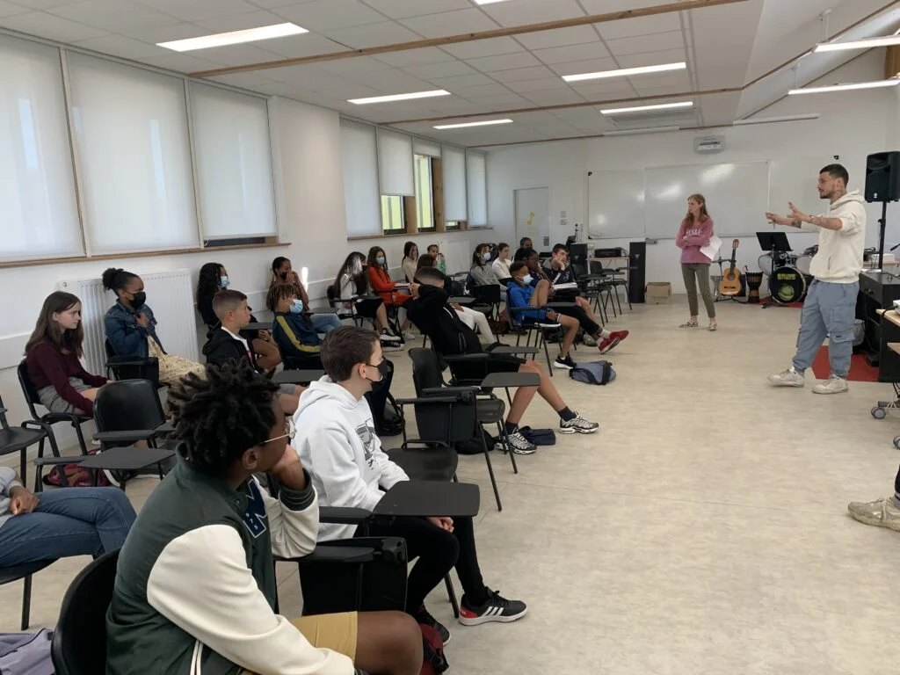

Ateliers slam à Bordeaux
Champion de France de Slam, bordelais, j'anime des ateliers d'écriture et d'oralité dans les établissements et les structures de la métropole depuis 2016.
Bordeaux est ma ville. C'est ici que j'ai commencé à écrire et ici que j'ai mené mes premiers ateliers en 2016. Depuis, j'interviens dans toute la France — mais la majorité de mes projets se sont déroulés en Gironde : au Rocher de Palmer à Cenon, à la Maison des adolescents de Bordeaux, à l'UEAJ, dans les collèges de la métropole et de la rive droite.
Un intervenant slam installé à Bordeaux
Un atelier slam ne se joue pas seulement sur la qualité de l'intervenant : il se joue aussi sur l'organisation. Travailler depuis Bordeaux rend les interventions faciles à caler dans la métropole — un projet filé sur plusieurs séances plutôt qu'un passage unique, des dates qui se replacent sans tout reconstruire, et la possibilité de venir repérer une salle avant la restitution.
Ça veut dire aussi connaître le terrain. Je sais ce que peut accueillir la salle du Rocher de Palmer, comment se passe une restitution dans un hall de collège de la rive droite, et à quel moment de l'année scolaire les équipes de Gironde montent leurs dossiers d'atelier d'écriture. Ce sont des détails qui ne se voient pas dans une plaquette, et qui font la différence entre un atelier qui s'ajoute au programme et un atelier qui s'y intègre — en français autour de la poésie, en EMC autour de l'oral, ou en préparation du grand oral au lycée.

Les lieux qui m’ont accueilli, à Bordeaux et autour
Les quatre ateliers, en Bordeaux comme ailleurs

Avec qui je travaille
Questions fréquentes
Oui, c’est même le cœur de mon activité depuis 2016 : ateliers slam en collège et en lycée à Bordeaux, sur la rive droite et dans toute la Gironde, du primaire au lycée professionnel. Travaillant depuis Bordeaux, une intervention dans la métropole se cale facilement — y compris un parcours réparti sur plusieurs séances, ce qui est souvent plus difficile à organiser avec un intervenant venu de loin.
Il n’y a pas de tarif au catalogue : le budget dépend du volume d’heures, du nombre de groupes et de la restitution envisagée. Un atelier de quatre heures pour une classe et un parcours de vingt heures avec scène finale n’ont rien à voir. Décrivez-moi votre contexte et je réponds avec une proposition chiffrée. Mes interventions sont éligibles au pass Culture et je suis agréé par l’Éducation nationale.
Quatre heures suffisent pour une découverte aboutie — jeux oraux, écriture, partage devant le groupe. Pour une restitution publique, je recommande au minimum huit heures, et idéalement un parcours de quinze à vingt heures réparti sur plusieurs séances. Les projets girondins que je raconte sur ce site vont de deux heures ponctuelles à quatre années de suite.
Oui. À Bordeaux et en Gironde, j’interviens autant en structure jeunesse — MJC, centres sociaux, dispositifs éducatifs — qu’en secteur médico-social : Maison des adolescents, foyers d’accueil, unités éducatives. Le cadre change, la technique aussi : un groupe qui vient librement le mercredi ne se mène pas comme une classe.
Le slam est ma discipline mère, mais j’anime aussi des ateliers rap — jusqu’au clip vidéo —, des ateliers d’éloquence adossés au grand oral, et des battles de compliments. Sur Bordeaux, j’ai mené les quatre formats ; le choix se fait selon le groupe et l’objectif plutôt que selon un catalogue.
Oui, et c’est ce qui donne sa force à un parcours. Selon les projets, la restitution s’est jouée dans un gymnase de collège, dans le hall d’un établissement, ou sur la scène du Rocher de Palmer à Cenon lors d’une scène ouverte pendant le Nouveau Festival. Le lieu se choisit avec l’équipe, en fonction du groupe et de ce qu’il est prêt à affronter.
Sur le terrain
Mes projets à Bordeaux et dans la métropole
Et ailleurs en Gironde
Ce qu’on en a dit, localement
Un projet en Bordeaux ?
Atelier slam en collège, en lycée, en structure jeunesse ou en établissement médico-social : décrivez-moi votre groupe, votre créneau et la période visée. Je réponds avec une proposition adaptée.